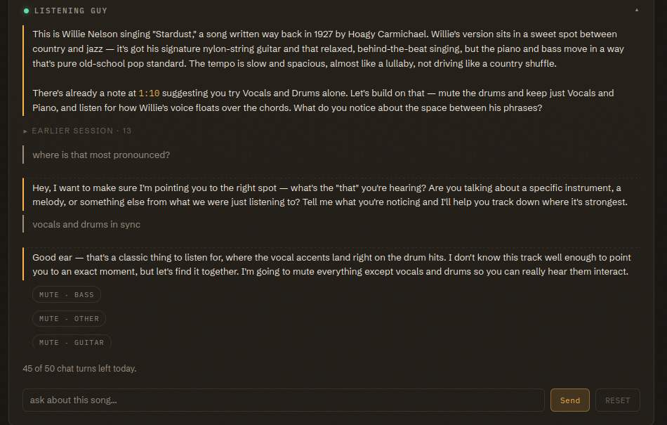

Listening Guy
Listening Guy writes a guide for each recording and answers questions in a chat. It can change the mixer, but it cannot hear the audio, so check its descriptions against the stems.

From the Guide to the Mixer
Listening Guy can generate an opening cue with possible listening questions. Personal cues use your Personal instruction scope; class cues use that class’s scope. Generating a cue requires available access and allowance. Reading an existing cue does not generate another answer.
Use the chat to ask about an instrument, a section, or an unfamiliar term. Listening Guy can read pinned notes and suggest a next step. When an answer calls for a mixer action, it can mute or solo a stem, move the playhead, or pin a note. A chip such as MUTE · BASS appears in the transcript to record the change. Press Esc to clear solos and the active loop.
Using the Chat
Type into ask about this song… and press Send. The line above the input shows how many turns remain today. A failed reply costs no turn, and you can retry an interrupted reply without a second charge. If the provider becomes unavailable, the panel explains the problem while the mixer remains available.
Reset clears your saved conversation for that split and starts again. Earlier session shows saved history restored when you return to a recording; it does not preserve conversations you reset. Reset does not restore spent turns.
What an Answer Can Support
Listening Guy uses the song's title and artist, the stem layout, your notes, and the conversation. A statement about a backbeat may come from its general knowledge of a style. The model has no direct evidence from the audio.
In the demonstrated session, Listening Guy acknowledged that it could not identify an exact moment and suggested that students find it together. The model could mute the requested stems, but students had to listen for the passage. Ask, Then Verify turns that division of work into an exercise with a claim, a mixer action, and a note about what students heard.
Turns and Pacing
When guest Listening Guy is enabled, the panel shows guest turns left. Its two-turn total is shared across the browser session; reloading, resetting a conversation, or choosing another recording does not replenish it. If guest access is unavailable or exhausted, use CUNY Login. See Privacy & Limits.
Signed-in members receive a daily allowance of successful turns. Account → Dashboard and the chat panel show the remaining count. It resets at midnight UTC, which falls at 8:00 PM Eastern during daylight time and 7:00 PM during standard time. Generated guides and existing conversations cost no turn to read.
Personal and Class Instructions
Open Account → Settings to save instructions for your Personal work. Authorized instructors can choose a class under Instructions for to edit that class’s instructions. Class instructions do not apply to guest sessions or independent Personal work. Each scope has its own revision history.
Authorized instructors can read conversations attached to their course's splits through the Class Workspace. Students acknowledge that access before assigning work to the course. The review view costs no turn and allows no edits.
Listening Guy uses the Lab's model gateway. Settings shows the fixed system prompt under Prompt reference, where you can inspect the instructions that frame its answers.